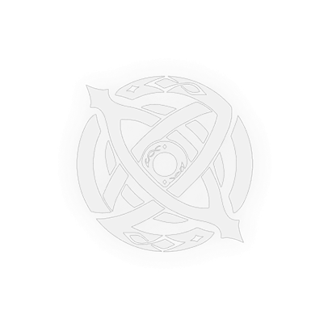

Teyvat & Unknown · Organizations & Factions
Hexenzirkel
The Hexenzirkel is Alice’s circle of mages, whose members pursue research, create story worlds, and explore Teyvat’s mysteries. Version 7.2 names Ioanna Ivanovna as member J and reveals Alice’s Seeker duties under Istaroth, while leaving the group’s full structure unclear.

Alice’s Circle of Witches
The Hexenzirkel, or Circle of Witches, is an association founded by Alice. Its members have distinct histories and specialties; the story shows them meeting and cooperating, but it has not described the group as a government or a force that acts under one command.
The named members include Alice (A), Barbeloth (B), Ioanna Ivanovna (J), Andersdotter (M), Nicole Reeyn (N), Octavia (O), and Rhinedottir (R). The Version 7.2 Archon Quest confirms Ioanna’s name and codename directly. That roster does not tell us everything about the circle’s origins, current membership rules, or purpose.
Members with different specialties
The stories connect Barbeloth with astrology and hydromancy, Rhinedottir with alchemy, Andersdotter with writing, and Alice with wide-ranging magic and travel. Nicole appears as a guide who sometimes speaks after major changes to the world, while Octavia is tied to Miliastra Wonderland and travels beyond Teyvat.
These examples show the range of the circle’s interests, not a shared set of powers. The game has not said that every member can read Irminsul, alter fate, or create worlds in the same way.
Meetings, Irminsul, and Teyvat’s history
The circle’s gatherings and research bring its members into questions about Irminsul, Teyvat’s past, and the nature of the world. Those interests matter because Irminsul is tied to the memories and records of the Ley Lines, but the story has not shown that the witches can freely rewrite history.
The Hexenzirkel connects stories that otherwise seem far apart, including Alice’s travels, Rhinedottir’s work, and Nicole’s guidance. A shared affiliation does not make every member responsible for another’s actions or beliefs.
Stories and made worlds
The Hexenzirkel’s work also touches stories that take on a life of their own. Alice, Barbeloth, and Andersdotter are associated with Simulanka, while Andersdotter’s storybook Durin later receives a new path through the combined work of Alice, Barbeloth, and Rhinedottir in ‘The Magic Known as Storytelling.’
That quest is a specific collaboration involving story, astrology, alchemy, and magic. It does not establish a general rule that any written tale can become real, nor does it make the storybook Durin identical to the original Dragonspine dragon.
Membership is not the same as succession
People connected to a Hexenzirkel member are not automatically members themselves. Mona studies under Barbeloth; Scarlett carries forward Ioanna’s legacy; Klee is Alice’s daughter; and Albedo is Rhinedottir’s creation and part of Alice’s family. Those relationships do not by themselves establish membership in the circle.
The distinction matters when the story uses terms such as student, successor, or family. Treat a person as a Hexenzirkel member only when the game identifies them as one.
Alice’s work as a Seeker
In Chapter VII: Act V, Alice says that ‘as seekers’ she and her colleagues have the right and responsibility to maintain the world’s border and explore life and knowledge in the universe. She names Istaroth as their supporter and says Istaroth has forbidden them from entering the conflict between Snezhnaya and the Heavenly Principles.
The quest does not define the Seekers’ full organization or explicitly say that the word is another name for every Hexenzirkel member. Keep that relationship open instead of treating the two labels as interchangeable.
Ioanna, Snezhnaya, and the circle’s limits
Pierro identifies Ioanna Ivanovna as a former member of the Hexenzirkel with codename J, as Pulcinella’s predecessor, and as the first chair of the Snezhnograd Veche. He says her friendship between Snezhnaya and the circle persisted after her death. Alice and Nicole answer the Tsaritsa’s invitation and help the group question the Esoptron at the Temple of Space, using Asmoday’s identity because Alice says acting as herself would be dangerous.
The scene also shows what the witches do not know. Nicole has never heard of the Trials of Usurpation, and Alice cannot produce a further answer once the Esoptron requires them. Nicole offers the Tsaritsa a personal hope for Snezhnaya, then Alice says the Hexenzirkel can do no more. Their knowledge and influence are substantial, but neither is unlimited.
What remains unclear
The game has not fully explained why the Hexenzirkel was founded, how its members are chosen, how its agreements work, or how the group relates to the Seekers. It has also not set out a complete account of the members’ shared duties or limits.
Read the circle through its named members and their direct actions. The group’s links to Irminsul, stories, and Teyvat’s borders are established; claims about a hidden master plan or powers beyond those shown remain theories.
This is an original CoreGG reading guide, not an official HoYoverse article or a reproduction of the game text. Source links below identify the records used so you can check the original context.
Sources & references
Check these sources for the original game text and reference trail.